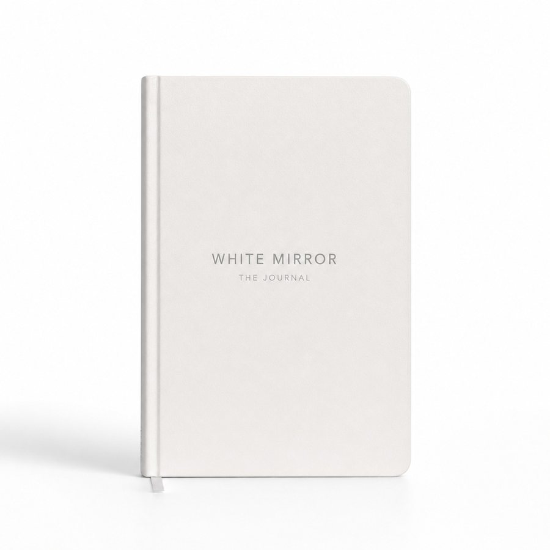

الدفتر الورقي
مساحة خاصة، على الورق.
مكان ملموس للكتابة والتأمل والعودة إلى نفسك، بعيدًا عن المشتتات الرقمية. مرن وقابل لإعادة الاستخدام: أنت من يقرّر ما يُكتب في الصفحة.
White Mirror Labs
نبني منتجات ذكية تساعد الناس على فهم أنفسهم، والعناية بعافيتهم، والتواصل مع الآخرين بعمق أكبر.
منتجنا الأول، White Mirror Journal، متاح للطلب المسبق، ويُشحن بحلول ٣٠ نوفمبر ٢٠٢٦ إلى جميع محافظات مصر.
المنظومة
شركة لتنمية الإنسان تعمل بالذكاء الاصطناعي، وتنقسم إلى ثلاثة قطاعات أعمال. التقنية أداتنا، والإنسان غايتنا.
The Mind
افهم نفسك. لاحظ أنماطك. انمُ عن قصد.
The Body
The Community
White Mirror Labs
الوعي بالذات والتطوّر الشخصي.
ما هو
أول منتج من The Mind. تكتب بيدك في مساحة خاصة، والتطبيق يساعدك على أن تلاحظ ما كتبت وترتّبه وتفهمه.
لماذا وُجد
معظمنا يشعر أكثر مما يفهم. الدفتر الفارغ يمنحك مساحة بلا اتجاه، والتطبيق وحده شاشة أخرى. White Mirror Journal يجمع الاثنين، ويترك المعنى لك.
تحت الطباعة الآن، ويُشحن بحلول ٣٠ نوفمبر ٢٠٢٦. التوصيل مجاني داخل مصر.

الدفتر الورقي
مكان ملموس للكتابة والتأمل والعودة إلى نفسك، بعيدًا عن المشتتات الرقمية. مرن وقابل لإعادة الاستخدام: أنت من يقرّر ما يُكتب في الصفحة.
التطبيق المرافق
أسئلة يومية، واستكشاف للمزاج، وتنفّس موجَّه، ونظرة على الأنماط المتكرّرة عبر تدويناتك. ويمكنك تصوير صفحاتك المكتوبة بخط اليد لتدخل إلى التطبيق، حيثما كان ذلك مدعومًا.
كيف يعملان معًا
التطبيق المرافق يفتح قريبًا. انضم لقائمة الانتظار للوصول المبكر.
التطبيق المرافق
تقنية ذكية تساعدك على التأمل وترتيب تجاربك وملاحظة الأنماط المحتملة. وأنت من يقرّر ما تعنيه.
اليوم
سؤال واحد، وخمس حالات مزاجية، ومساحة للكتابة. كل تدوينة تُشفَّر بمفتاح خاص بك قبل تخزينها. ويمكنك تصوير صفحة من دفترك الورقي لتدخل إلى التطبيق.
الخريطة
حالاتك المزاجية في خريطة واحدة. في رحلة الإصدار التأسيسي تُرتَّب حسب المرحلة، فيظهر عبر الزمن ما لا تشعر به يومًا بيوم.
التأمل
تأمل موجَّه أو صامت أو بموسيقى. دائرة متحركة تضبط إيقاع نفَسك، وقنوات هادئة ترافق الجلسة كلها.
أنت
سلسلة أيامك وتقدّمك. و«الرؤى» تقرأ عبر تدويناتك وتشير إلى أنماط محتملة: هي تقترح، وأنت تقرّر معناها.
المنهج
الإطار الذي يوجّه الممارسة: من ملاحظة ما تشعر به إلى اختيار خطوتك التالية.
لاحظ ما تشعر به.
سمِّ ما يحدث بداخلك.
استكشف ما قد يكون وراءه.
جرّب أن تراه من زاوية مختلفة.
لاحظ الأنماط والتغيّرات عبر الزمن.
اختر خطوة تالية ذات معنى.
الإصدار التأسيسي
«اكتشف نفسك» مسار موجَّه لـ ٩٠ يومًا في خمس مراحل. هو طريقة واحدة لاستخدام White Mirror، ويبقى الدفتر نفسه مفتوحًا لما تريد أن تكتبه.
الأيام ١ – ١٨
أول صفحة صادقة. تسمّي ما أنت فيه دون تجميل.
الأيام ١٩ – ٣٦
تحت السطح، حيث تتكرّر الأنماط.
الأيام ٣٧ – ٥٤
اللحظة التي يتغيّر فيها شيء في طريقة نظرك.
الأيام ٥٥ – ٧٢
ما كان مبعثرًا يصير خطًا واضحًا.
الأيام ٧٣ – ٩٠
حياة تختارها عن قصد، لا بالعادة.
الفلسفة
لا تحتاج إلى تقنية تخبرك من أنت. تحتاج إلى مساحة تفهم فيها نفسك بوضوح أكبر.
وُجدت White Mirror لتصنع هذه المساحة.
نؤمن أن النمو يبدأ بالوعي، وأن التغيير يبدأ بالفهم، وأن التواصل الحقيقي يبدأ حين يجد الناس مساحة ليكونوا أنفسهم.
الهدف ليس أن تصبح شخصًا آخر، بل أن تفهم نفسك بما يكفي لتختار من تصبح.
ما القادم
والفكرة نفسها تمتد إلى كل قطاع: تقنية تساعد الناس على أن يعيشوا بإنسانية أكبر.
The Body
اعتنِ بعافيتك الجسدية.
قريبًاThe Community
تواصل مع الآخرين بعمق.
White Mirror Space · قريبًاThe Mind
دفتر ورقي وتطبيق مرافق، صُمِّما كممارسة واحدة.
اطلب الدفتر مسبقًاالدفتر تحت الطباعة والطلب المسبق متاح داخل مصر. التطبيق المرافق على الويب وiOS وAndroid يفتح قريبًا.
أسئلة شائعة
شركة لتنمية الإنسان تعمل بالذكاء الاصطناعي، وتبني منتجاتها في ثلاثة قطاعات: The Mind (الوعي بالذات والتطوّر الشخصي)، وThe Body (العافية الجسدية، قريبًا)، وThe Community (التواصل الإنساني). أول منتجاتها White Mirror Journal ضمن The Mind، أما White Mirror Space فينتمي إلى The Community ويأتي قريبًا.
دفتر ورقي يرافقه تطبيق، وكلاهما مبني على منهج M.I.R.R.O.R.. الدفتر مساحة خاصة ومرنة للكتابة والتأمل بعيدًا عن المشتتات الرقمية، والتطبيق يضيف أسئلة يومية واستكشافًا للمزاج وتنفّسًا موجَّهًا ونظرة على الأنماط المتكرّرة.
لا. الدفتر الورقي مساحة مرنة تستخدمها كما تشاء. والإصدار التأسيسي «اكتشف نفسك» يضيف رحلة موجَّهة لـ ٩٠ يومًا في خمس مراحل، لمن يريد إطارًا.
لا. التقنية الذكية تساعدك على التأمل وترتيب تجاربك وملاحظة الأنماط المحتملة. لا تخبرك من أنت، وليست نصيحة طبية أو علاجية.
٤٩٩ جنيهًا مصريًا شاملة التوصيل داخل مصر. الدفتر تحت الطباعة ويُشحن بحلول ٣٠ نوفمبر ٢٠٢٦. ويمكنك إلغاء طلبك واسترداد المبلغ كاملًا في أي وقت قبل الشحن.
نعم. التطبيق مجاني ١٤ يومًا بدون بطاقة وبدون اشتراك. بعدها يبقى كل ما كتبته متاحًا للقراءة دائمًا، ويظل التأمل مجانيًا، أما التدوينات الجديدة و«الرؤى» فتُفتح بالرقم التسلسلي داخل الدفتر.
نعم. لديك ١٤ يومًا من الاستلام لإرجاع الدفتر دون إبداء سبب، ونستلمه منك دون تكلفة، ويُرد المبلغ خلال ٧ أيام. والتالف أو الخاطئ نعالجه على نفقتنا دائمًا. راجع سياسة الاسترداد.
تُشفَّر تدويناتك بمفتاح خاص بحسابك قبل تخزينها. لا نبيع بياناتك، ولا نستخدم ما تكتبه في الإعلانات ولا في تدريب النماذج. التفاصيل في سياسة الخصوصية.
الإصدار الأول من الدفتر بالإنجليزية، وصفحاته مصمَّمة لتكتب فيها بأي لغة تريح قلمك. صفحات الشروط والخصوصية والاسترداد متاحة بالعربية، ودعم العملاء يرد بالعربية.
وصول مبكر
الدفتر تحت الطباعة ومفتوح للطلب المسبق. والتطبيق المرافق يفتح قريبًا، فسجّل لتكون من أوائل الداخلين.
تواصل
الدفع أو الوصول أو أي خلل. راسلنا مباشرة.
support@whitemirrorlabs.com١٢٨ حدائق دجلة
حدائق أكتوبر، الجيزة
مصر